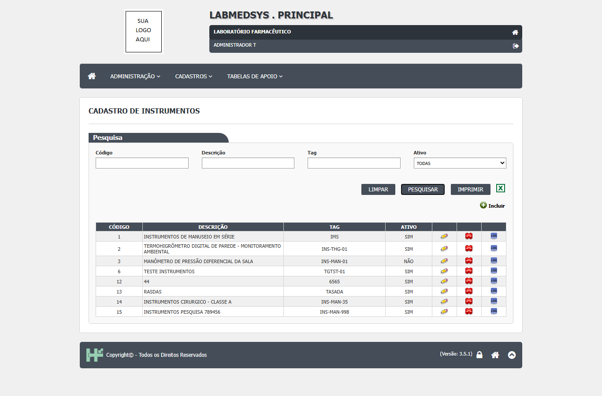
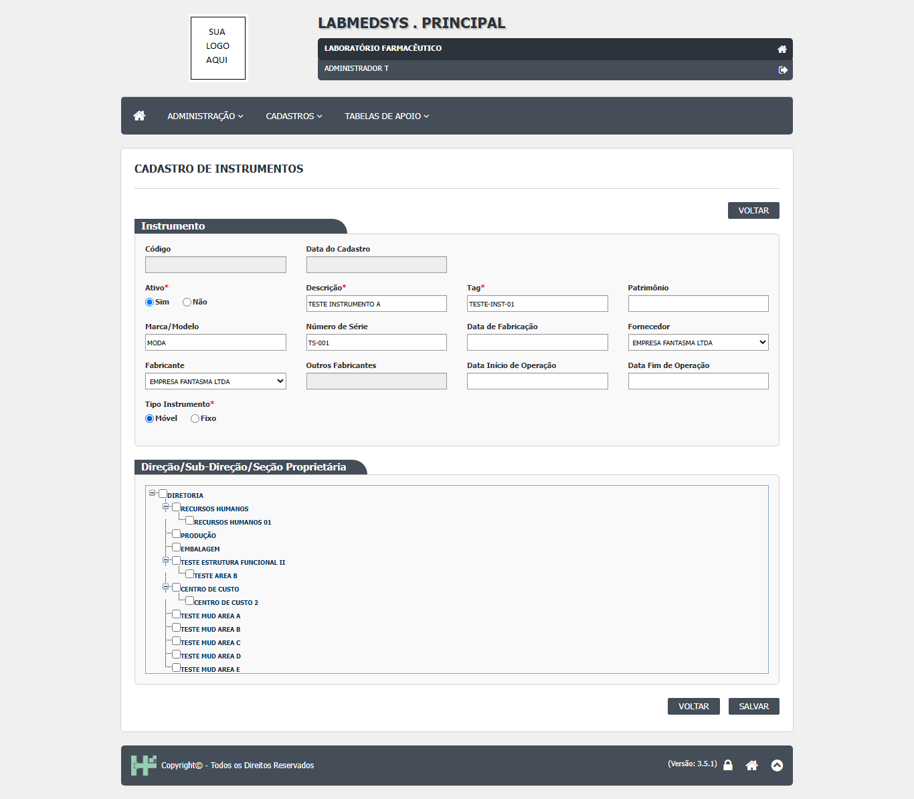
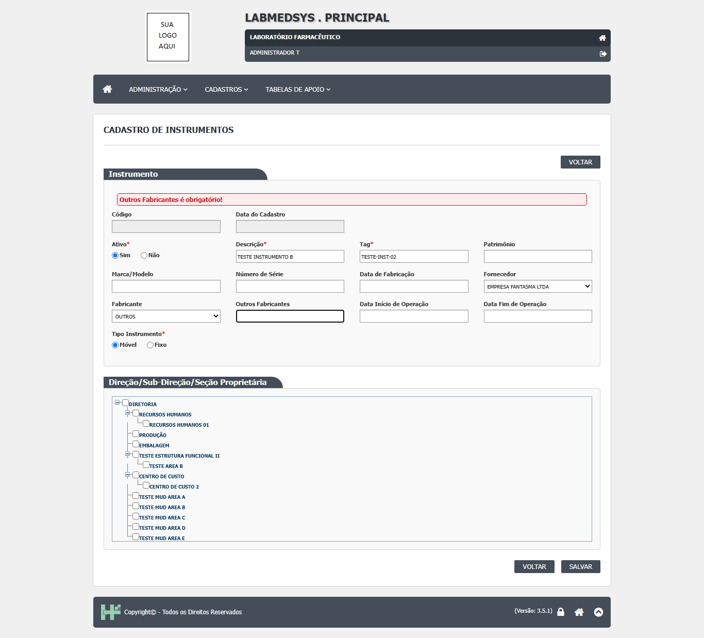
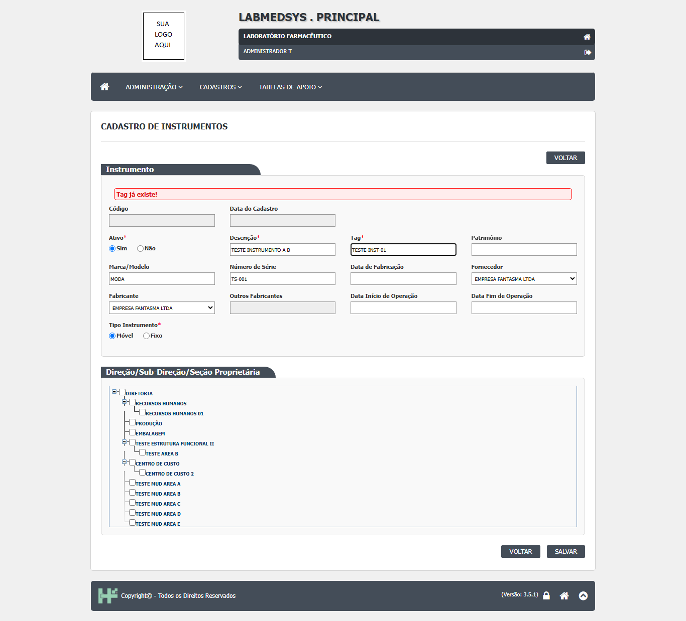
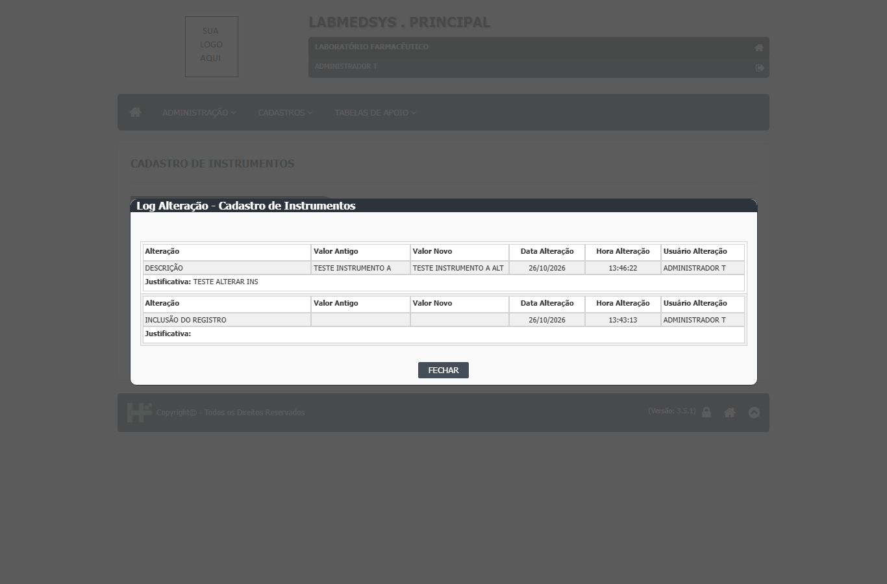
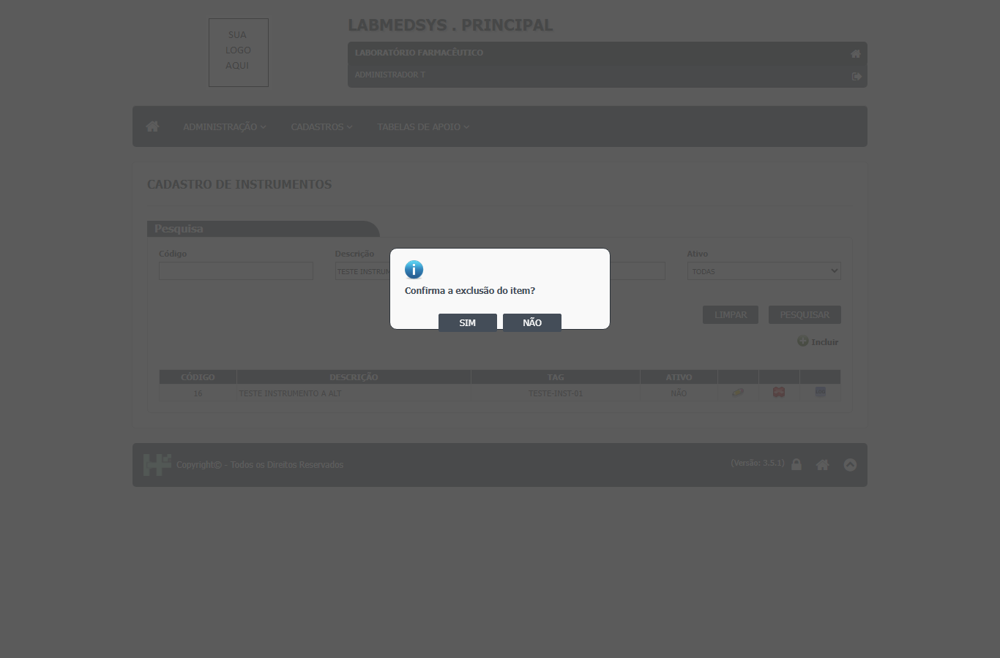
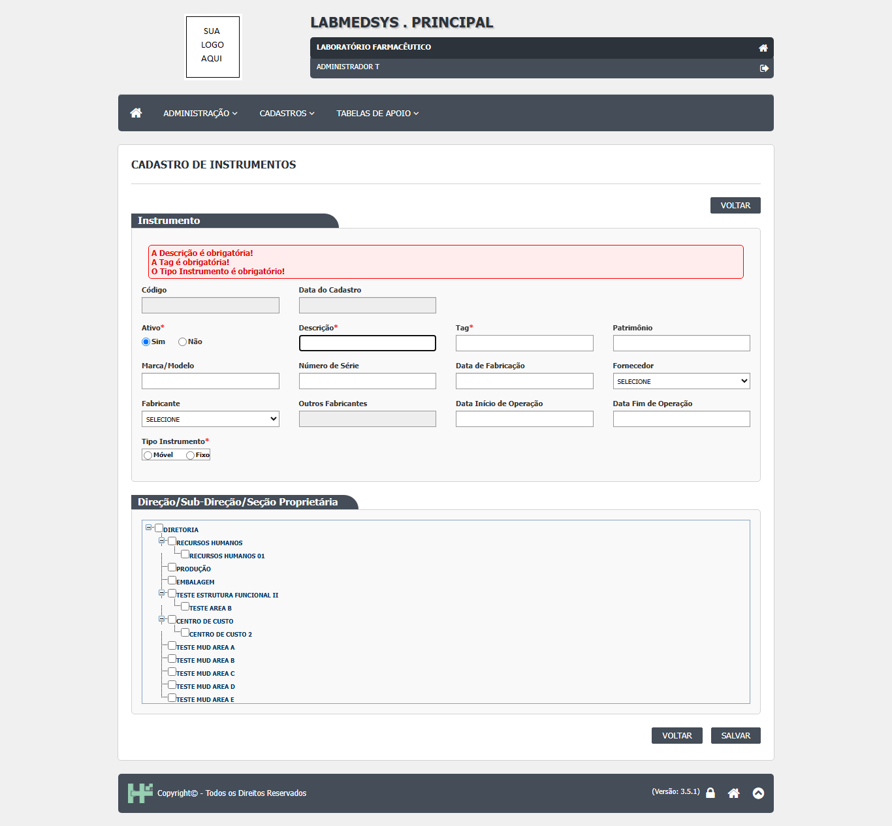
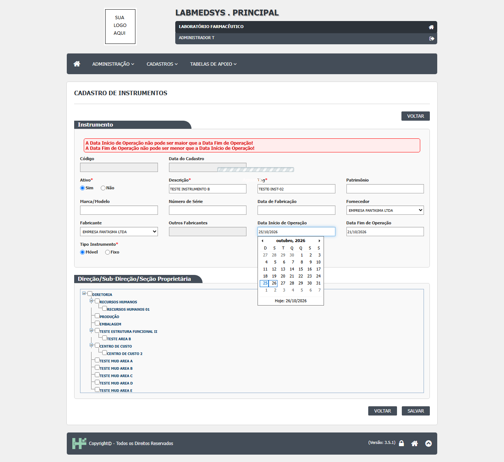
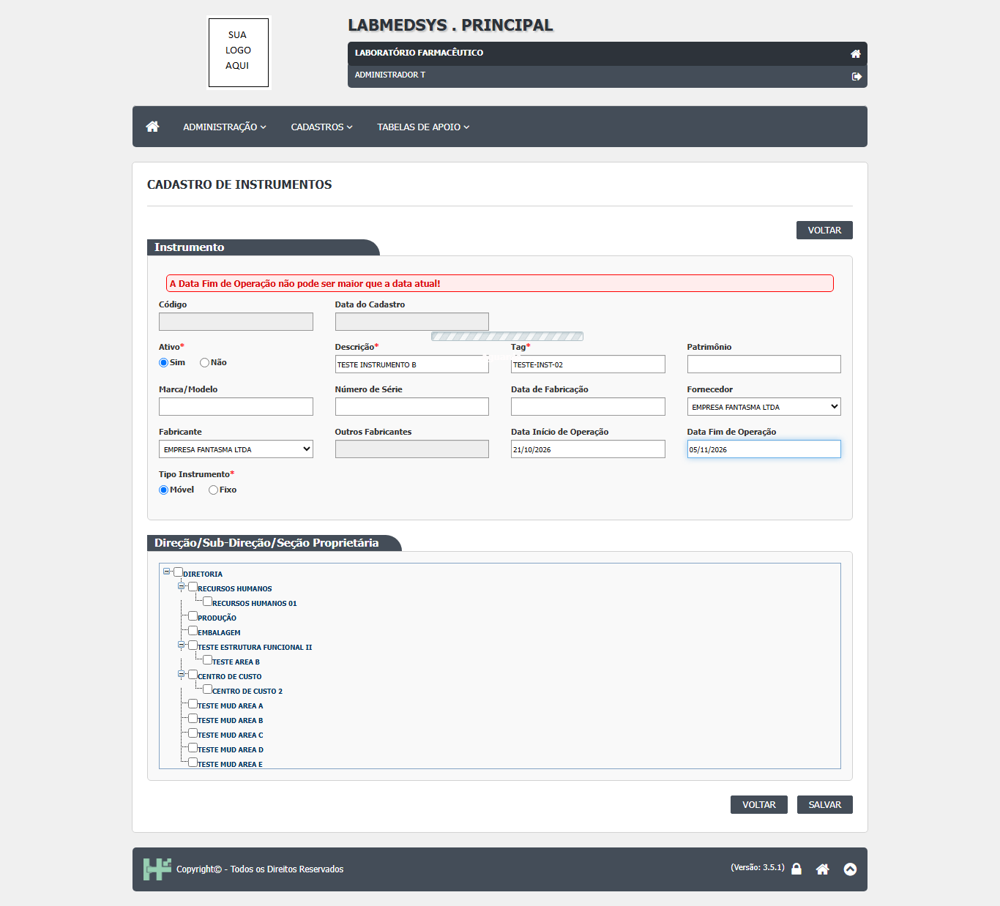
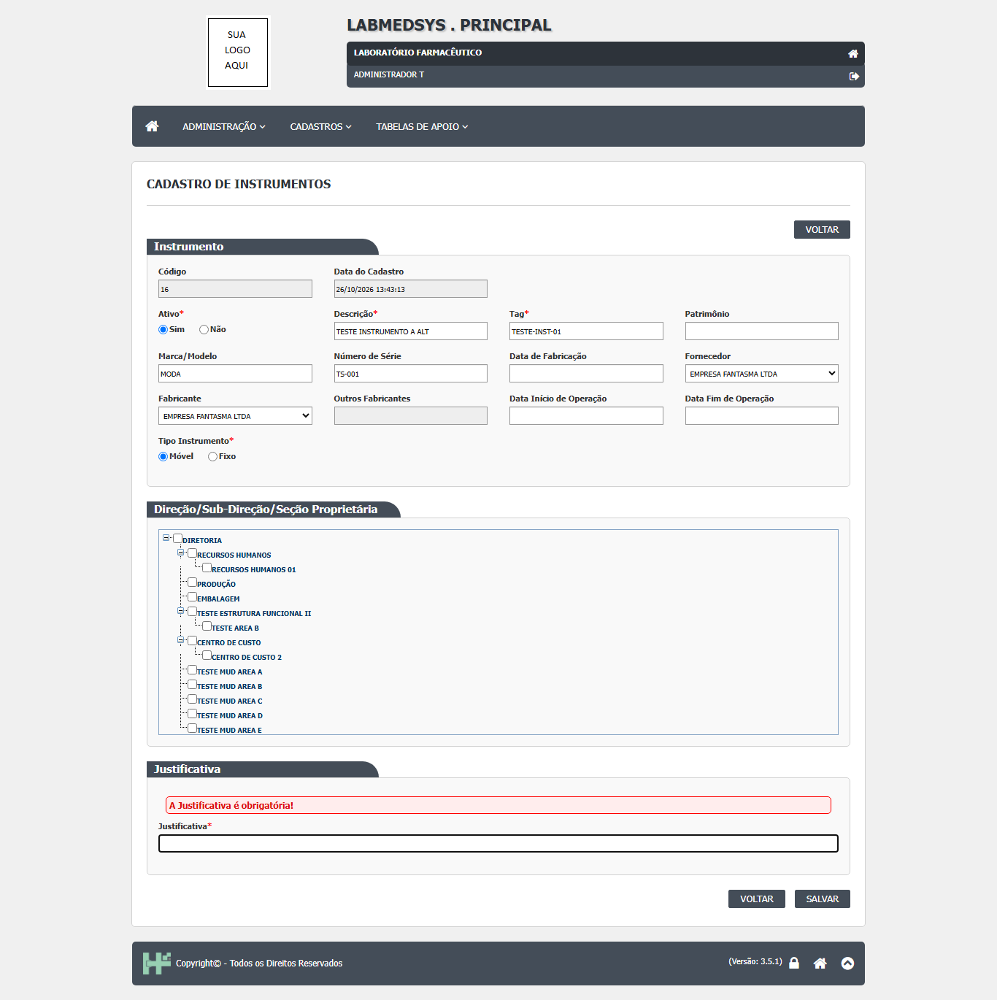

Para que serve
Cadastra os instrumentos de medição da fábrica (balanças, termômetros, manômetros e similares; exemplos da leitura da área, a validar), com tag, patrimônio, marca/modelo, número de série, fabricante, fornecedor, datas de operação, tipo (móvel ou fixo) e a estrutura funcional proprietária. O código mostra duas telas no mesmo cadastro:
- Lista com pesquisa por código, descrição, tag e situação, ordenação, impressão e Excel (instrumento_lst.aspx:41-69; instrumento_lst.aspx.cs:33-153).
- Formulário para incluir, alterar e consultar (instrumento_ed.aspx:43-197).
O cadastro não guarda calibração, qualificação nem periodicidade: isso é programado e registrado na Produção, que escolhe o instrumento daqui (calibracao_ed.aspx.cs:58-67 e 132-135; TBL_PROGRAMACAO_CALIBRACAO.sql:13; TBL_REGISTRO_CALIBRACAO.sql:5-6, módulo Produção).
Quem usa e em que etapa do processo
Quem usa
- Quem mantém os cadastros da fábrica: engenharia, metrologia ou qualidade (leitura da área, a validar).
- Quem consulta a lista e o histórico.
- Quem pode abrir, incluir, alterar, excluir, imprimir e ver o histórico está em "Quem pode usar (permissões)", mais abaixo.
Em que etapa do processo entra (tela 8 do menu Cadastros, módulo Principal)
- Pelo menu superior Cadastros › Cadastro de Instrumentos, que abre a lista.
- Na lista, Pesquisar traz os instrumentos (a lista não carrega sozinha); Incluir abre o formulário vazio e o lápis abre um instrumento.
O que acontece depois (para onde o trabalho segue)
- SALVAR pergunta "Confirma a inclusão do item?" ou "Confirma a alteração do item?". Com SIM, o sistema confere os obrigatórios, grava e mostra "Inclusão realizada com sucesso!" ou "Alteração realizada com sucesso!"; o OK volta à lista.
- O instrumento ativo passa a ser oferecido no bloco "Instrumentos do Ambiente" do cadastro de Ambientes e, na Produção, nas telas de calibração, qualificação, limpeza, lubrificação e lote padrão (ver "Dados").
Fonte: Resumo da tela e fluxo da tela (leitura do código e dos testes). O que for leitura da área precisa ser validado com a área.
Antes de começar (o que precisa existir)
- Entre no módulo Principal e abra Cadastros › Cadastro de Instrumentos.
- Quem não tem a função desta tela (código 89) é levado à página de acesso negado ao abrir a lista (instrumento_lst.aspx.cs:19; ClassePaiLst.cs:65). Incluir, Editar, Excluir, Imprimir e Ver Log só aparecem para quem tem a ação correspondente (ClassePaiLst.cs:111-255).
- Antes de cadastrar, confira se já existem o fabricante e o fornecedor em Pessoa jurídica (tipos Fabricante e Fornecedor) e a estrutura funcional (instrumento_ed.aspx.cs:42-66 e 134-167).
Passo a passo
Situação das imagens (14/11/2026): imagens reaproveitadas dos testes de 26/10/2026 (rodada 3), cada uma conferida contra o texto. Sem imagem: o aviso de sucesso, a inativação, a recusa de exclusão com instrumento ligado a ambiente, o relatório e o Excel.
Pesquisar
- Abra a lista (vem vazia). Preencha, se quiser, Código (só números), Descrição, Tag e Ativo e clique em Pesquisar (instrumento_lst.aspx:41-60).
- A grade mostra Código, Descrição, Tag e Ativo (instrumento_lst.aspx:95-109). Clique no título da coluna para ordenar.

Figura 1: A lista de Cadastro de Instrumentos depois de Pesquisar: filtros Código, Descrição, Tag e Ativo, botões LIMPAR, PESQUISAR, IMPRIMIR, Excel e Incluir, e a grade com os ícones Editar, Excluir e LOG.
- Limpar esvazia filtros e grade (instrumento_lst.aspx.cs:76-79).
Incluir
- Clique em Incluir.
Figura 2: O formulário de inclusão de instrumento aberto, vazio: quadro Instrumento e quadro Direção/Sub-Direção/Seção Proprietária.
- Preencha Descrição, Tag, Tipo Instrumento (Móvel ou Fixo) e Ativo (obrigatórios) e, se quiser, Patrimônio, Marca/Modelo, Número de Série, Data de Fabricação, Fabricante, Fornecedor, datas de operação. Em "Direção/Sub-Direção/Seção Proprietária" marque uma estrutura (instrumento_ed.aspx:54-178).

Figura 3: O formulário preenchido: Descrição, Tag, Marca/Modelo, Número de Série, Fornecedor, Fabricante e Tipo Instrumento, antes de salvar.
- Se o fabricante não está na lista, escolha OUTROS: o campo "Outros Fabricantes" é liberado e passa a ser obrigatório (instrumento_ed.aspx.cs:248-263).

Figura 4: Fabricante OUTROS escolhido e o campo Outros Fabricantes em branco: mensagem vermelha "Outros Fabricantes é obrigatório!".
- Clique em SALVAR e responda SIM. Os obrigatórios só são cobrados depois do SIM (instrumento_ed.aspx.cs:191-230).
- Se a Tag já existir entre os instrumentos ativos, aparece "Tag já existe!" (bllInstrumento.cs:94-98).

Figura 5: Salvar com uma Tag já existente: mensagem vermelha "Tag já existe!".
Alterar ou inativar
- Clique no lápis, mude o que precisar e escreva a Justificativa (obrigatória só na alteração) (instrumento_ed.aspx.cs:101-118; instrumento_ed.aspx:183-197).
- Para inativar, mude Ativo para Não. Um instrumento inativo abre travado, com só Ativo e Justificativa liberados (instrumento_ed.aspx.cs:101-118).
- O histórico guarda o valor antigo e o novo de cada campo alterado, menos a data de fabricação e "Outros Fabricantes" (dalLogAlteracaoInstrumento.cs:26-201).

Figura 6: A janela "Log Alteração - Cadastro de Instrumentos": a mudança de DESCRIÇÃO (valor antigo e novo) com a justificativa e a linha "INCLUSÃO DO REGISTRO".
Excluir
- Na lista, clique no ícone de exclusão. O sistema pede só a confirmação "Confirma a exclusão do item?", sem justificativa (instrumento_lst.aspx.cs:161-165 e 506-515).

Figura 7: Ao clicar em excluir, a pergunta "Confirma a exclusão do item?" (SIM e NÃO) aparece direto sobre a lista, sem pedir justificativa.
- Se o instrumento está ligado a um ambiente, a exclusão é recusada com "Exclusão inválida, existem referências com outras tabelas." e sem dizer qual (bllInstrumento.cs:224-229).
- Atenção: as conferências que impediriam alterar ou excluir um instrumento com calibração, limpeza, lubrificação, qualificação ou lote padrão estão desligadas no código (ver falhas).
Ver o histórico, imprimir e exportar
- O ícone LOG abre o histórico (instrumento_lst.aspx.cs:172-182).
- Imprimir e o Excel respeitam os filtros (instrumento_lst.aspx.cs:103-153).
O que acontece ao confirmar ou salvar
- SALVAR pergunta "Confirma a inclusão do item?" ou "Confirma a alteração do item?". Com SIM, o sistema confere os obrigatórios, grava e mostra "Inclusão realizada com sucesso!" ou "Alteração realizada com sucesso!"; o OK volta à lista (instrumento_ed.aspx.cs:191-230, 280-360 e 456-500).
- O instrumento ativo passa a ser oferecido no bloco "Instrumentos do Ambiente" do cadastro de Ambientes e, na Produção, nas telas de calibração, qualificação, limpeza, lubrificação e lote padrão (ver "Dados").
Registro em uso por outro cadastro (inativar ou excluir):
- Se o instrumento está ligado a um ambiente, a exclusão é recusada com "Exclusão inválida, existem referências com outras tabelas." e sem dizer qual.
- Atenção: as conferências que impediriam alterar ou excluir um instrumento com calibração, limpeza, lubrificação, qualificação ou lote padrão estão desligadas no código (ver falhas).
O que o sistema recusa
- "A Situação é obrigatório!": Ativo sem escolha (concordância errada) (instrumento_ed.aspx:56)
- "A Descrição é obrigatória!" / "A Tag é obrigatória!": Campo em branco (instrumento_ed.aspx:66 e 74)
- "O Tipo Instrumento é obrigatório!": Sem Móvel/Fixo (instrumento_ed.aspx:157)
- "Outros Fabricantes é obrigatório!": Fabricante OUTROS sem texto (instrumento_ed.aspx:123)
- "A Data Início de Operação não pode ser maior que a Data Fim de Operação!" e "... maior que a data atual!": Datas incoerentes (instrumento_ed.aspx:133-134)
- "A Data Fim de Operação não pode ser menor que a Data Início de Operação!" e "... maior que a data atual!": Datas incoerentes (instrumento_ed.aspx:144-145)
- "A Justificativa é obrigatória!": Alteração sem justificativa (instrumento_ed.aspx:194)
- "Tag já existe!": Outra tag igual entre os ativos (bllInstrumento.cs:96 e 144)
- "Patrimônio já existe!" / "Número de série já existe!": Só na alteração (bllInstrumento.cs:150 e 156)
- "Erro na inclusão de Instrumento." / "Erro na alteração de Instrumento.": Falha inesperada (bllInstrumento.cs:127 e 173)
- "Exclusão inválida, existem referências com outras tabelas.": Instrumento usado em outra tabela do Principal; não diz qual (bllInstrumento.cs:228)
- "Erro na Exclusão de Instrumento.": Falha inesperada na exclusão (bllInstrumento.cs:245)

Figura 8: Salvar com tudo em branco: mensagens vermelhas "A Descrição é obrigatória!", "A Tag é obrigatória!" e "O Tipo Instrumento é obrigatório!".

Figura 9: Data de início maior que a data de fim: duas mensagens vermelhas dizendo que o início não pode ser maior que o fim e que o fim não pode ser menor que o início.

Figura 10: Data Fim de Operação no futuro: mensagem vermelha "A Data Fim de Operação não pode ser maior que a data atual!".

Figura 11: Alterar sem Justificativa: mensagem vermelha "A Justificativa é obrigatória!" sobre o campo Justificativa.
Quem pode usar (permissões)
- A lista usa a função de tela "89" (instrumento_lst.aspx.cs:19). A base das listas confere a função logo no início e leva quem não a tem à página de acesso negado (ClassePaiLst.cs:65; BaseController.cs:26-31). Incluir, Editar, Consultar, Excluir, Imprimir e Ver Log dependem de cada ação (ClassePaiLst.cs:111-255).
- O formulário usa a mesma função (instrumento_ed.aspx.cs:20). A base do formulário só calcula as ações e não bloqueia a entrada (ClassePaiEd.cs:71-156). Para um instrumento existente sem a ação Alterar, a tela fica travada e sem SALVAR (instrumento_ed.aspx.cs:120-123). No formulário novo nada esconde o SALVAR (o ajuste só roda quando há um código: instrumento_ed.aspx.cs:70 e 125-130). Pelo código, quem abrir o formulário vazio pelo endereço poderia incluir um instrumento (a confirmar no teste; mesmo padrão do DV-PRI-025).
- O relatório (
instrumento_rel) não tem conferência própria de permissão (instrumento_rel.aspx.cs:12-80; mesmo padrão do DV-PRI-025 parausuario_releperfil_rel). - O detalhe da conferência de acesso está na seção "Segurança e acesso" desta tela.
Cuidados e falhas conhecidas
- Nenhum. A tela não foi testada (inventário: Não testada). Nenhum DV-PRI registrado tem esta tela como alvo (
defeitos/defeitos-completo.json, campotela). - DV-PRI-009 (Alta), visto em outro cadastro (Excluir Ambiente e Equipamento sem justificativa). Nesta tela: Mesmo comportamento: só a confirmação "Confirma a exclusão do item?" (instrumento_lst.aspx.cs:506-515). Situação aqui: A confirmar no teste.
- DV-PRI-011 (Média), visto em outro cadastro (Recusa de exclusão com mensagem genérica). Nesta tela: Mesma mensagem (bllInstrumento.cs:228). Situação aqui: A confirmar no teste.
- DV-PRI-014 (Alta), visto em outro cadastro (Histórico de excluído não pode ser consultado). Nesta tela: Lista só com LIXEIRA = 0 e ícone LOG na linha (dalInstrumento.cs:88-92). Situação aqui: A confirmar no teste.
- DV-PRI-008 (Baixa), visto em outro cadastro (Pesquisa não ignora acentos). Nesta tela: Pesquisa com LIKE no banco (dalInstrumento.cs:98-101). Situação aqui: A confirmar no teste.
- DV-PRI-025 (Alta), visto em outro cadastro (Telas de edição abrem pelo endereço sem permissão). Nesta tela: O formulário não bloqueia a entrada (ver segurança). Situação aqui: A confirmar no teste.
- DV-PRI-026 (Média), visto em outro cadastro (Erro técnico do ASP.NET em envio inválido). Nesta tela: A gravação da estrutura funcional pode derrubar a página (item 2 abaixo). Situação aqui: A confirmar no teste.
- (a confirmar no teste) Excluir sem justificativa (RN-PRI-070; DV-PRI-009 nos outros cadastros). A parte de justificativa da exclusão foi toda comentada.
- (a confirmar no teste) Duas estruturas marcadas na árvore derrubam a gravação com erro técnico. O código junta os códigos marcados com hífen (por exemplo "3-5") e converte em número fora do trecho que trata erros.
- (a confirmar no teste) A trava de alteração do instrumento está desligada. O código previa bloquear a alteração de instrumento com calibração, limpeza, lubrificação, qualificação, lote padrão ou autorização, mas as seis consultas estão comentadas e a função devolve sempre "pode alterar".
- (a confirmar no teste) Patrimônio e número de série repetidos são aceitos na inclusão e barrados na alteração: inconsistência.
- (a confirmar no teste) A data de fabricação e "Outros Fabricantes" não entram no histórico: podem ser mudados sem rastro.
- (a confirmar no teste) Data de fim de operação não pode ser futura: não dá para registrar a desativação programada.
- (a confirmar no teste) Reativar com tag repetida não é barrado: a tag só é conferida quando muda e só entre ativos.
- (a confirmar no teste) Pesquisa e relatório montados com o texto digitado. O filtro de caracteres da tela tira o apóstrofo ao digitar, mas só no navegador.
- (a confirmar no teste) Tag de pesquisa com 10 caracteres, tag do cadastro com 30: uma tag longa não pode ser digitada inteira no filtro.
- (a confirmar no teste) O cadastro não mostra calibração: não há data da última calibração, validade, periodicidade nem certificado nesta tela; para saber se o instrumento está calibrado é preciso abrir a Produção (ver exigências da norma).
- (a confirmar no teste) Mensagem com concordância errada: "A Situação é obrigatório!".
- As imagens deste manual vêm do teste de 26/10/2026 (rodada 3). Os resultados desse teste ainda precisam ser conferidos com a seção "Casos de teste" desta tela, que pode ter sido escrita antes dele.
Ícones e botões da lista
Inclui também os botões do formulário.
| Ícone ou botão | O que faz | Quando aparece |
|---|---|---|
| Pesquisar | Procura com os filtros | Na lista |
| Limpar | Esvazia filtros e grade | Na lista |
| Incluir | Abre o formulário vazio | Para quem tem a ação Incluir |
| Imprimir e ícone do Excel | Abre o relatório com os filtros | Depois de uma pesquisa com resultado, para quem tem Imprimir/Excel |
| Lápis (Editar) e lupa (Consultar) | Abrem o formulário | Conforme as ações do perfil |
| Excluir | Pede só a confirmação e exclui | Para quem tem Excluir |
| LOG | Abre o histórico | Para quem tem Consultar log |
| SALVAR | Pede confirmação e grava | No formulário |
| VOLTAR (alto e rodapé) | Volta à lista sem gravar | No formulário |
Campos da tela
Caminhos das fontes na seção Resumo da tela. "Sim (servidor)" quando o servidor também confere; "Só na tela" quando só o navegador confere.
Lista
| Campo na tela | Tipo | Obrigatório | Regra, limite ou valores possíveis | Fonte |
|---|---|---|---|---|
| Código | Texto | Não | Só dígitos, até 10; filtra o código exato | instrumento_lst.aspx:41-43; dalInstrumento.cs:93-96 |
| Descrição | Texto | Não | Até 100 caracteres na pesquisa (o cadastro aceita 255); procura o texto dentro da descrição; a tela passa para maiúsculas | instrumento_lst.aspx:46-48; instrumento_lst.aspx.cs:39; dalInstrumento.cs:98-101 |
| Tag | Texto | Não | Até 10 caracteres na pesquisa (a tag aceita 30); procura o texto dentro da tag | instrumento_lst.aspx:51-53; dalInstrumento.cs:103-106 |
| Ativo | Lista | Não | TODAS (padrão), SIM, NÃO | instrumento_lst.aspx:56-60 |
| Grade | Tabela | Não | Código, Descrição, Tag e Ativo; colunas Editar, Consultar, Excluir e VerLog conforme as permissões | instrumento_lst.aspx:95-140 |
Formulário
| Campo na tela | Tipo | Obrigatório | Regra, limite ou valores possíveis | Fonte |
|---|---|---|---|---|
| Código | Texto travado | Não se aplica | Gerado pelo banco | instrumento_ed.aspx:43-44 |
| Data do Cadastro | Texto travado | Não se aplica | Data e hora de criação | instrumento_ed.aspx:47-48; instrumento_ed.aspx.cs:76 |
| Ativo | Sim / Não | Sim | Padrão Sim; mensagem "A Situação é obrigatório!" | instrumento_ed.aspx:54-61 |
| Descrição | Texto | Sim | Até 255; maiúsculas; só letras, números e alguns sinais (filtro do navegador); "A Descrição é obrigatória!" | instrumento_ed.aspx:64-69; instrumento_ed.aspx.cs:293 |
| Tag | Texto | Sim | Até 30; letras, números e hífen (filtro do navegador); maiúsculas; "A Tag é obrigatória!"; única entre os ativos | instrumento_ed.aspx:72-77; dalInstrumento.cs:439-463 |
| Patrimônio | Texto | Não | Até 30; maiúsculas; conferido só na alteração | instrumento_ed.aspx:80-82; bllInstrumento.cs:148-152 |
| Marca / Modelo | Texto | Não | Até 30 | instrumento_ed.aspx:87-89 |
| Número de Série | Texto | Não | Até 30; maiúsculas; conferido só na alteração | instrumento_ed.aspx:93-95; bllInstrumento.cs:154-158 |
| Data de Fabricação | Data com calendário e máscara | Não | dd/mm/aaaa; sem comparação com outras datas | instrumento_ed.aspx:99-108 |
| Fornecedor | Lista | Não | Pessoas jurídicas do tipo Fornecedor ativas | instrumento_ed.aspx:109-110; instrumento_ed.aspx.cs:55-66 |
| Fabricante | Lista | Não | Pessoas jurídicas do tipo Fabricante ativas, mais "OUTROS"; ao escolher OUTROS libera o campo abaixo | instrumento_ed.aspx:117-118; instrumento_ed.aspx.cs:42-53 e 248-263; dalPJ.cs:869-874 |
| Outros Fabricantes | Texto | Sim, só se OUTROS | Até 255; maiúsculas; "Outros Fabricantes é obrigatório!" | instrumento_ed.aspx:121-126; instrumento_ed.aspx.cs:195-203 e 303 |
| Data Início de Operação | Data | Não | Não pode ser maior que a data atual nem que a Data Fim | instrumento_ed.aspx:130-137 |
| Data Fim de Operação | Data | Não | Não pode ser menor que o início nem maior que a data atual | instrumento_ed.aspx:142-149 |
| Tipo Instrumento | Móvel / Fixo | Sim | "O Tipo Instrumento é obrigatório!"; sem valor padrão | instrumento_ed.aspx:155-162 |
| Direção/Sub-Direção/Seção Proprietária | Árvore com caixas de marcação | Não | Estrutura funcional dona do item; o código só aceita uma marcada | instrumento_ed.aspx:168-178; instrumento_ed.aspx.cs:134-184 e 305-308 |
| Justificativa | Texto | Sim, só ao alterar | Até 255; maiúsculas | instrumento_ed.aspx:183-197; instrumento_ed.aspx.cs:31-32 e 114-116 |
Botões e ações
| Botão ou ação | Quando aparece | O que faz | Fonte |
|---|---|---|---|
| Pesquisar | Na lista | Procura com os filtros | instrumento_lst.aspx.cs:67-75 |
| Limpar | Na lista | Esvazia filtros e grade | instrumento_lst.aspx.cs:76-80 |
| Incluir | Para quem tem a ação Incluir | Abre o formulário vazio | instrumento_lst.aspx.cs:81-85 |
| Imprimir e ícone do Excel | Depois de uma pesquisa com resultado, para quem tem Imprimir/Excel | Abre o relatório com os filtros | instrumento_lst.aspx.cs:103-153 |
| Lápis (Editar) e lupa (Consultar) | Conforme as ações do perfil | Abrem o formulário | instrumento_lst.aspx.cs:166-171 |
| Excluir | Para quem tem Excluir | Pede só a confirmação e exclui | instrumento_lst.aspx.cs:161-165 e 395-436 |
| LOG | Para quem tem Consultar log | Abre o histórico | instrumento_lst.aspx.cs:172-182 |
| SALVAR | No formulário | Pede confirmação e grava | instrumento_ed.aspx.cs:191-230 |
| VOLTAR (alto e rodapé) | No formulário | Volta à lista sem gravar | instrumento_ed.aspx.cs:186-189; instrumento_ed.aspx:28 |
Mensagens do sistema
Nenhuma mensagem desta tela apareceu em teste. Todas vêm do texto do código.
| Mensagem (texto exato do código) | Quando aparece | Fonte |
|---|---|---|
| "Confirma a inclusão do item?" / "Confirma a alteração do item?" | Ao clicar em SALVAR | instrumento_ed.aspx.cs:495 e 499 |
| "Inclusão realizada com sucesso!" / "Alteração realizada com sucesso!" | Depois de gravar | instrumento_ed.aspx.cs:324 e 359 |
| "A Situação é obrigatório!" | Ativo sem escolha (concordância errada) | instrumento_ed.aspx:56 |
| "A Descrição é obrigatória!" / "A Tag é obrigatória!" | Campo em branco | instrumento_ed.aspx:66 e 74 |
| "O Tipo Instrumento é obrigatório!" | Sem Móvel/Fixo | instrumento_ed.aspx:157 |
| "Outros Fabricantes é obrigatório!" | Fabricante OUTROS sem texto | instrumento_ed.aspx:123 |
| "A Data Início de Operação não pode ser maior que a Data Fim de Operação!" e "... maior que a data atual!" | Datas incoerentes | instrumento_ed.aspx:133-134 |
| "A Data Fim de Operação não pode ser menor que a Data Início de Operação!" e "... maior que a data atual!" | Datas incoerentes | instrumento_ed.aspx:144-145 |
| "A Justificativa é obrigatória!" | Alteração sem justificativa | instrumento_ed.aspx:194 |
| "Tag já existe!" | Outra tag igual entre os ativos | bllInstrumento.cs:96 e 144 |
| "Patrimônio já existe!" / "Número de série já existe!" | Só na alteração | bllInstrumento.cs:150 e 156 |
| "Erro na inclusão de Instrumento." / "Erro na alteração de Instrumento." | Falha inesperada | bllInstrumento.cs:127 e 173 |
| "Confirma a exclusão do item?" | Ao clicar em Excluir | instrumento_lst.aspx.cs:514 |
| "Exclusão realizada com sucesso!" | Depois de excluir | instrumento_lst.aspx.cs:416 |
| "Exclusão inválida, existem referências com outras tabelas." | Instrumento usado em outra tabela do Principal; não diz qual | bllInstrumento.cs:228 |
| "Erro na Exclusão de Instrumento." | Falha inesperada na exclusão | bllInstrumento.cs:245 |
Quem pode fazer o quê
Ainda não levantado para esta tela
O quadro "Quem pode fazer o quê" é preenchido a partir de testes de tela por perfil (nível, área e etapa do registro), nunca por suposição. Esta tela ainda não passou por esse levantamento.